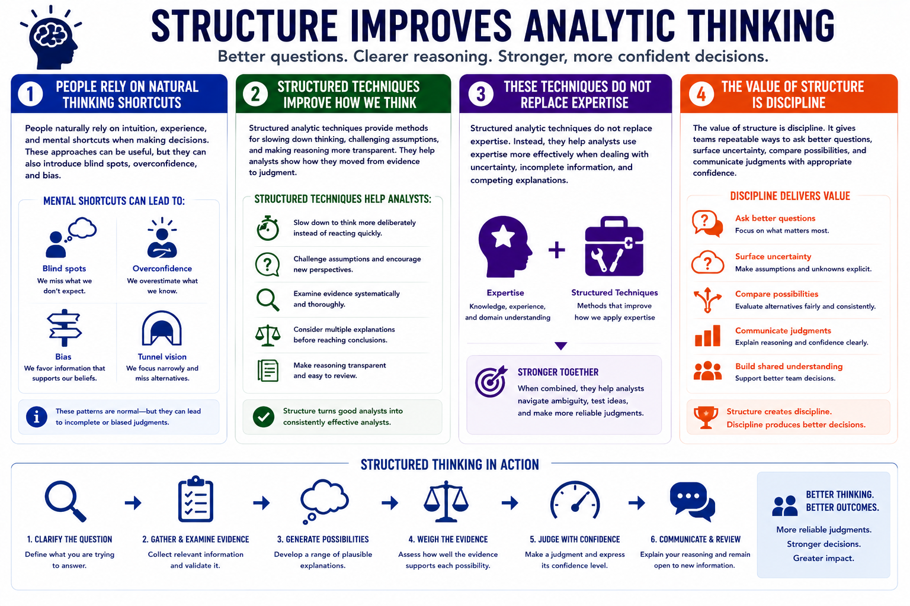

Structured Analytic Techniques
Why Structure Analysis?
Connecting to LMS... Progress: in progress
Version 1.0 | Date: 2026-06-16 | Educational overview of structured analytic techniques for judgment under uncertainty.

Narration
People naturally rely on intuition, experience, and mental shortcuts when making decisions. These approaches can be useful, but they can also introduce blind spots, overconfidence, and bias.
Structured analytic techniques provide methods for slowing down thinking, challenging assumptions, and making reasoning more transparent. They help analysts show how they moved from evidence to judgment.
These techniques do not replace expertise. Instead, they help analysts use expertise more effectively when dealing with uncertainty, incomplete information, and competing explanations.
The value of structure is discipline. It gives teams repeatable ways to ask better questions, surface uncertainty, compare possibilities, and communicate judgments with appropriate confidence.